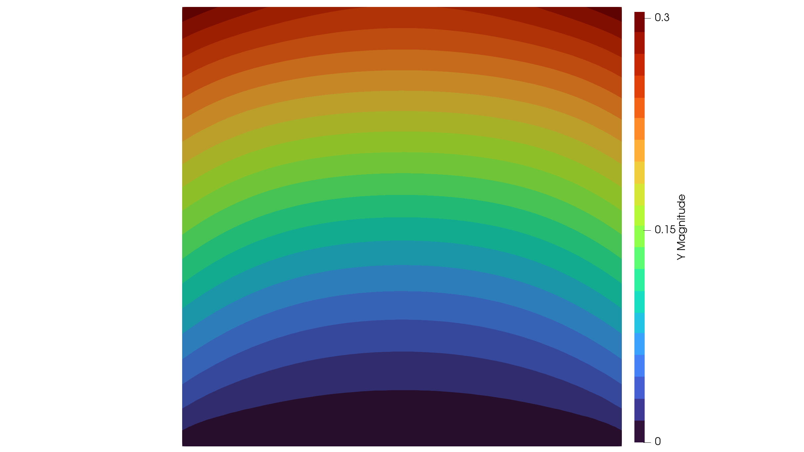
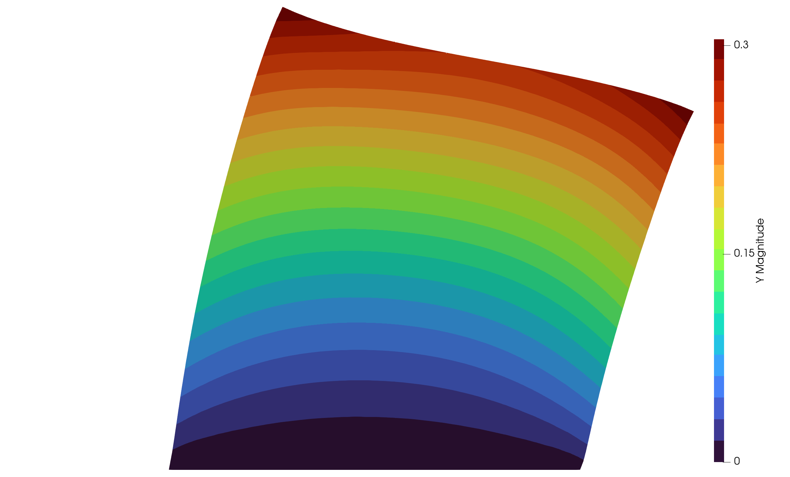

A Vector-Valued Problem
Consider the vector-valued problem for the displacements $u: \Omega \to \mathbb{R}^2$ of the form
\[\begin{aligned} -\mathrm{div}(u) = 0 &\quad \text{in}\; \Omega\\ \sigma(u) \cdot n = f &\quad \text{on}\; \Gamma_1\\ u = 0 &\quad \text{on}\; \Gamma_2 \end{aligned}\]
in terms of the stress tensor
\[\mathrm{div}(u) = \lambda \mathrm{tr}(\epsilon(u)) I + 2 \mu \epsilon(u),\]
strain tensor
\[\epsilon(u) = \frac{1}{2}\left( \nabla u + \nabla u^T \right)\]
and Lamé parameter $\lambda, \mu \geq 0$. The variational formulation is given by: Find $u \in V$ such that
\[\int_\Omega \sigma(u) : \epsilon(v)\,dx = \int_{\Gamma_1} f\cdot v \, ds \quad \forall \; v \in V\]
where $V:=\lbrace v\in (H^1(\Omega))^2: v = 0\, \text{ a.e. on } \Gamma_2\rbrace$.
We start again by importing the mesh file and selecting the physical boundaries for the problem.
using MinFEM
mesh = import_mesh("../meshes/square.msh")
forcingBoundary = select_boundaries(mesh, 1001)
fixedBoundary = select_boundaries(mesh, 1003)Next we assemble the stiffness matrix with the (not very meaningful) Lamé parameter $\lambda = 1$, $\mu = 1$ as well as the boundary mass matrix.
L = assemble_elasticity(mesh, 1.0, 1.0)
Mb = assemble_massmatrix_boundary(mesh, boundaryElements=extract_elements(forcingBoundary),
qdim=2)Here, the last argument qdim=2 states that the operator shall be assembled for a vector-valued problem with the respective image dimension. This is necessary for most operations, but notably not for the elasticity assembly, since the operator can only be vector-valued anyways.
Now, we define the source term on the upper boundary. It reflects simply a constant force in force in $x_1$-direction.
f(x) = [0.1, 0.0]
s = evaluate_mesh_function(mesh, f, region=extract_nodes(forcingBoundary), qdim=2)In the next step we set up the PDE system and enforce the Dirichlet condition. Again, the last argument qdim=2 specifies that this is a vector-valued function.
pde = PDESystem(A=L, b=Mb*s, bc=zeros(2*mesh.nnodes), DI=extract_nodes(fixedBoundary),
qdim=2)
solve!(pde)The final step is the output to a Paraview file, quite similar as before. Please note, that image dimension 2 is internally a special case. A zero $x_3$-component is appended in order to generate a virtually 3-dimensional output, which is required by Paraview for several filters, e.g. "warp by vector".
write_to_vtk([pde.state, s], mesh, ["Y","S"], "elasticity", qdim=2)In Paraview, the visualization should then look similar to the following figures. The first image shows magnitude of the (vector-valued) solution and the second one still the magnitude, but now on the domain deformed by the field.
 